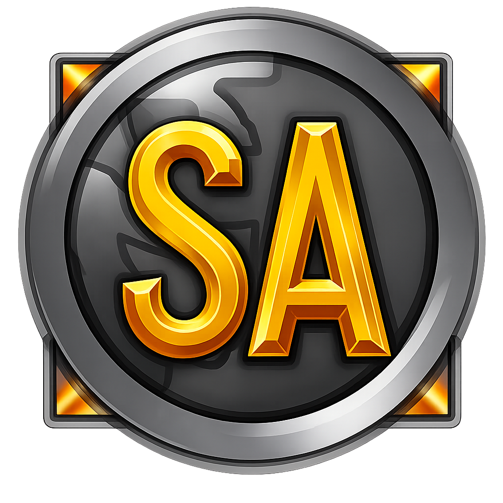

Historical snapshots of ancient WoW modding websites.
The archivists and developers maintaining SourceAzeroth.
Guiding rules for submitting content to the SourceAzeroth historical archive.
Promotional entries, player recruitment, or announcements for private server launches are strictly prohibited and will not be accepted.
As an exception, major legal actions, DMCAs, or forced shutdowns issued by Blizzard are allowed to be documented for historical preservation.
Submissions must center on open-source core emulators, software architecture, client modding tools, database editors, or analytics platforms.
All information must be accurate, factual, and verified by public code repositories, commit histories, or documented community milestones.
Fill out the event details below to generate the exact code snippet for a GitHub Pull Request.
data.js:
data.js file on GitHub.timeline array.